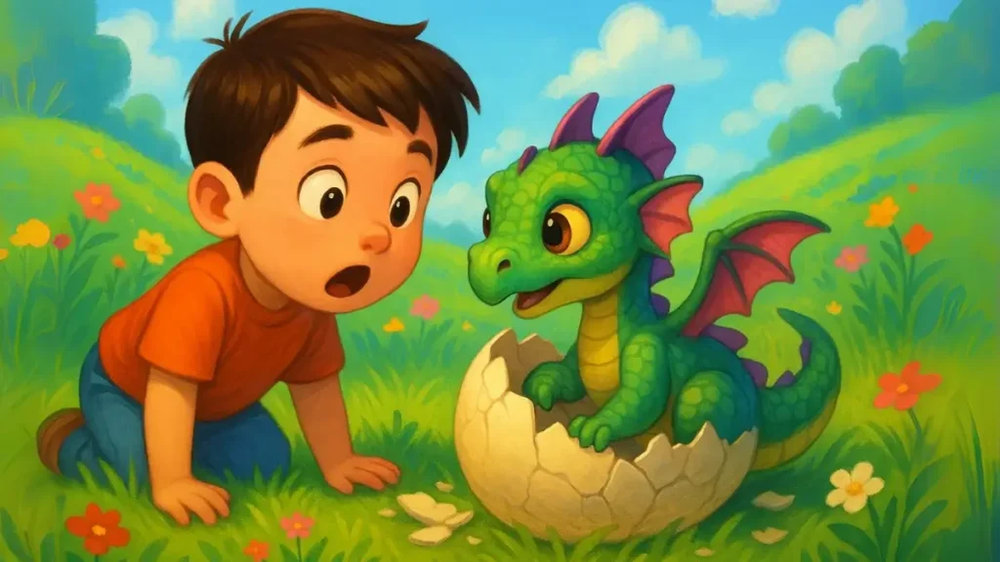
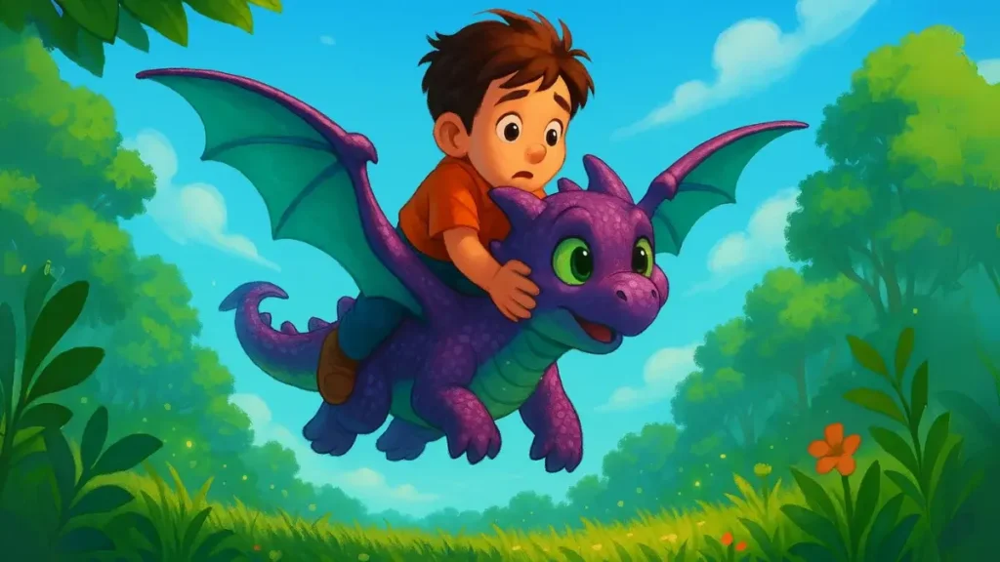

Bir Varmış Bir yokmuş
Gözleri kocaman, yeşil yeşilmiş. Burnundan hafif dumanlar çıkıyormuş. Derisi parlak morla yeşil arasında, pırıl pırılmış. Kafasında minik sivri çıkıntılar, arkasında kıpır kıpır iki kanat varmış. Ali bir adım yaklaşmış. “Sen, sen, sen bir ejderha mısın?” demiş fısıltıyla. Minik yaratık göz kırpmış, sonra kuyruğunu kıpırdatıp ağzını açmış. Ama korkunç bir kükreme bekleyen Ali, yalnızca “hııık” diye minicik bir öksürük sesi duymuş. Gülmeye başlamış. “Sen korkunç değilmişsin ki! Hatta çok tatlısın!” Ali ve minik ejderha o gün tanışmışlar. Ali ona “Pofik” adını vermiş. Çünkü burnundan çıkan dumanlar “pof pof” yapıyormuş. Pofik önce çok çekingenmiş, kanatlarını katlayıp Ali’nin arkasına saklanıyormuş. Ama Ali onunla konuşmaya, hafifçe dokunmaya, birlikte yürümeye başlayınca güveni artmış. İlk günler sadece birlikte oturmuşlar. Ali ona çimenlerin tadını göstermiş, gökyüzünü anlatmış. Sonra Pofik yavaş yavaş yürümeye başlamış. Sonra zıplamış. Sonra küçük küçük kanat çırpmış. Ali her gün geldiğinde, “Haydi bugün biraz daha yükseğe zıpla!” demiş. “Bugün rüzgârı dinle!” demiş. Pofik de her gün biraz daha öğrenmiş. Bir gün Ali, elini Pofik’in sırtına koyup, “Seninle gökyüzünde uçabilir miyim?” diye sormuş. Pofik önce şaşırmış, sonra kanatlarını germiş. Ali dikkatlice sırtına oturmuş. Pofik kanatlarını çırpmış. Bir, iki, üç, önce toprak havalanmış. Sonra ikisi birlikte yükselmişler. Ağaçların üzerinden geçmişler, çiçeklerin kokusu yukarıya kadar gelmiş. Gözleri kocaman, yeşil yeşilmiş. Burnundan hafif dumanlar çıkıyormuş. Derisi parlak morla yeşil arasında, pırıl pırılmış. Kafasında minik sivri çıkıntılar, arkasında kıpır kıpır iki kanat varmış. Ali bir adım yaklaşmış. “Sen, sen, sen bir ejderha mısın?” demiş fısıltıyla. Minik yaratık göz kırpmış, sonra kuyruğunu kıpırdatıp ağzını açmış. Ama korkunç bir kükreme bekleyen Ali, yalnızca “hııık” diye minicik bir öksürük sesi duymuş. Gülmeye başlamış. “Sen korkunç değilmişsin ki! Hatta çok tatlısın!” Ali ve minik ejderha o gün tanışmışlar. Ali ona “Pofik” adını vermiş. Çünkü burnundan çıkan dumanlar “pof pof” yapıyormuş. Pofik önce çok çekingenmiş, kanatlarını katlayıp Ali’nin arkasına saklanıyormuş. Ama Ali onunla konuşmaya, hafifçe dokunmaya, birlikte yürümeye başlayınca güveni artmış. İlk günler sadece birlikte oturmuşlar. Ali ona çimenlerin tadını göstermiş, gökyüzünü anlatmış. Sonra Pofik yavaş yavaş yürümeye başlamış. Sonra zıplamış. Sonra küçük küçük kanat çırpmış. Ali her gün geldiğinde, “Haydi bugün biraz daha yükseğe zıpla!” demiş. “Bugün rüzgârı dinle!” demiş. Pofik de her gün biraz daha öğrenmiş. Bir gün Ali, elini Pofik’in sırtına koyup, “Seninle gökyüzünde uçabilir miyim?” diye sormuş. Pofik önce şaşırmış, sonra kanatlarını germiş. Ali dikkatlice sırtına oturmuş. Pofik kanatlarını çırpmış. Bir, iki, üç, önce toprak havalanmış. Sonra ikisi birlikte yükselmişler. Ağaçların üzerinden geçmişler, çiçeklerin kokusu yukarıya kadar gelmiş.
Ali’nin kalbi pır pır atmış, yüzü rüzgârla gülümsemiş. Gökyüzünde özgürce süzülmüşler. Bundan sonra her gün uçmaya başlamışlar. Kimi zaman sabah güneş doğarken, kimi zaman akşam yıldızlar çıkarken. Pofik bazen ateş püskürtmeye çalışmış ama yalnızca bir kıvılcım çıkabilmiş. Ali kahkahalarla gülmüş. “Sen zaten böyle tatlıyken ateşe gerek yok!” demiş. Günler geçtikçe dostlukları daha da büyümüş. Ali sırlarını anlatmış, Pofik ise yanına konup onu dinlemiş. Ama bir gün, Ali okuldan geldiğinde gökyüzü grileşmiş, rüzgâr esmiş. Pofik ortada yokmuş. Ali onu aramış, çağırmış ama bulamamış. O gece gökyüzüne bakarken yıldızların arasında bir cisim görmüş. Kanatları parlıyormuş. “Pofik” demiş usulca. “Sen büyüdün mü yoksa?” Ertesi gün yine gitmiş. Yumurta kabuğu hâlâ oradaymış ama artık çok küçük görünüyormuş. Ali kabuğu eline almış. Gözleri dolmuş ama kalbi ısınmış. Çünkü Pofik’in ona kattığı neşe, hala yüreğindeymiş. Aradan zaman geçmiş. Ali büyümüş. Ama o tepelere çıktığında, bazen gökyüzünde süzülen bir gölge görürmüş. Gülümsermiş. Ama en özel gün, bir bahar sabahı olmuş. Ali yine o eski patikadan yürürken, çimenlerin arasına bırakılmış bir şey fark etmiş. Minicik, mor pullarla kaplı, parlayan bir taş. Üzerinde titrek ama tanıdık çizgilerle şöyle yazıyormuş: “Ali’ye, ilk dostuma. Uçmayı seninle öğrendim. Kalbim hep seninle olacak. – Pofik” Ali taşı ellerine almış, sımsıkı tutmuş. Gözleri dolmuş ama içi ısınmış. “Ben de seni hiç unutmayacağım Pofik” demiş fısıltıyla. Ve Minik Ejderha Masalından sonra ne zaman gökyüzünde bir yıldız parıldasa, Ali göğsündeki o taşı okşar, sessizce şöyle dermiş: “Gerçek dostluk bazen gökten gelirmiş. Ve bir kez kalbine girdiyse, hiç gitmezmiş.”